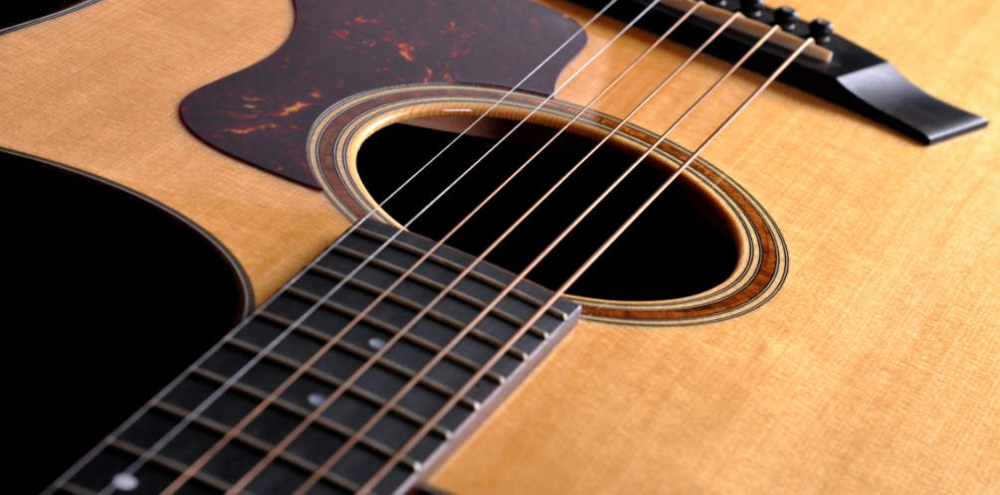

<header class="page-header">
    <app-nav></app-nav>
    <breadcrumb></breadcrumb>
</header>
<main class="page-main">
    <app-side-menu></app-side-menu>
    <section class="fontpage-mainContent">
        <figure>
            
            <figcaption>
                <h2>Martin <span>GPC-11E</span></h2>
                <p>SERIES ELECTRO ACOUSTIC</p>
                <div>
                    <h3>SE DEN NYE GENERATION HALVACOUSTISKE</h3>
                </div>
                <a routerLink="">LÆS MERE</a>
            </figcaption>
        </figure>
        <section class="favorites-frontpage">
            <h2>Kundernes favoritter</h2>
            <card-frontpage></card-frontpage>
        </section>
    </section>
</main>